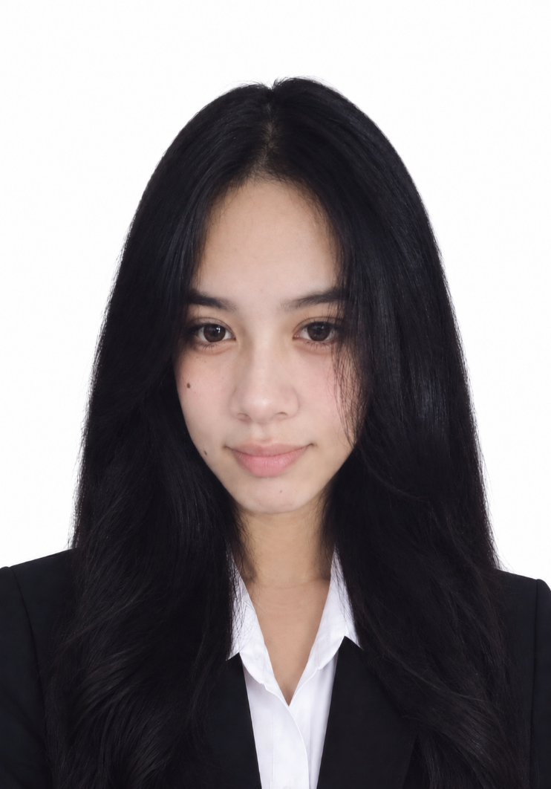

CURRENT
COLLEGE
ICCT Colleges
Bachelor of Science in Information Technology (BSIT)
Cainta Main CampusPERSONAL PORTFOLIO
BS Information Technology Student · Future IT Professional
Welcome to my personal space. Here, I share my journey, the skills I’m building, the things I enjoy, and the person I’m becoming.

01 / ABOUT ME
A little introduction to the person behind this page.
Hello! I’m Precious Gipoleo Milanes, a student who is learning, growing, and working toward a future in technology.
I study Bachelor of Science in Information Technology at ICCT Colleges, Cainta Main Campus. I enjoy exploring my interests, expressing myself through my personal style, and spending time with the people who matter to me. I’m still discovering my strengths, and I believe that every new experience can teach me something valuable.
02 / MY JOURNEY
My educational journey so far, and where I hope it takes me.
Bachelor of Science in Information Technology (BSIT)
Cainta Main CampusSenior High School · General Academic Strand (GAS)
San Pedro, Irosin, SorsogonJunior High School
San Pedro, Irosin, SorsogonLOOKING AHEAD
My goal is to finish my BSIT degree and keep improving my knowledge and skills in technology. I want to become a successful IT professional, build a stable career, and create a better future for myself and my family. I know it takes effort and patience, so I will keep learning and doing my best.
My educational background is shown above. I am continuing to build my experience through class activities, practice exercises, and personal learning. No certificates or awards have been added because none were included in the original portfolio.
03 / SKILLS I’M BUILDING
I’m still practicing and improving. These are the skills I’m developing.
Learning how to write code, understand basic concepts, and create simple programs.
Learning how websites are built and how HTML, CSS, and JavaScript work together.
Practicing how to understand problems, fix code errors, and learn from mistakes.
Exploring ideas and finding personal ways to express them through projects and activities.
Learning to share ideas clearly, listen to others, and contribute to group tasks.
Staying open to new knowledge and taking small steps toward improvement.
04 / PROJECTS & PRACTICE
A few academic exercises and practice projects that show what I’m learning in IT.
A console-based practice project with login, registration, and account recovery menu options. It helped me practice conditions, functions, file handling, and basic password hashing.
An employee timekeeping practice system with options to register employees, view employee information, and record attendance. It helped me understand lists, validation, and basic program flow.
A web development exercise focused on collecting student details, checking required fields, validating email and student number formats, and safely displaying submitted information.
These are descriptions and illustrative previews of academic practice work, not live application screenshots or public demo links.
05 / PHOTO GALLERY
Different looks and moments, all part of who I am.
Select any photo to view it larger.
06 / THINGS I ENJOY
The interests and everyday things that make my time enjoyable.
Horror and fantasy movies
Stories and new ideas
Mobile Legends and Minecraft
Browsing content and trends
Expressing my personal style
Listening in my free time
Making time for myself
Time with people I care about
07 / CONTACT
Thank you for visiting my portfolio. You can reach me through email or find me on Facebook.
Facebook profile name